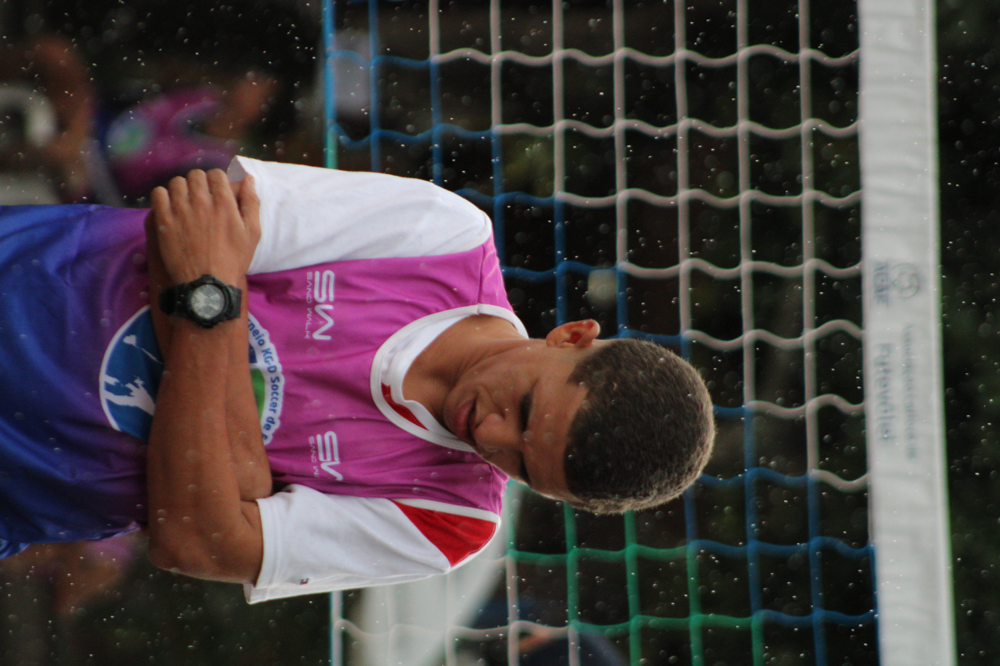
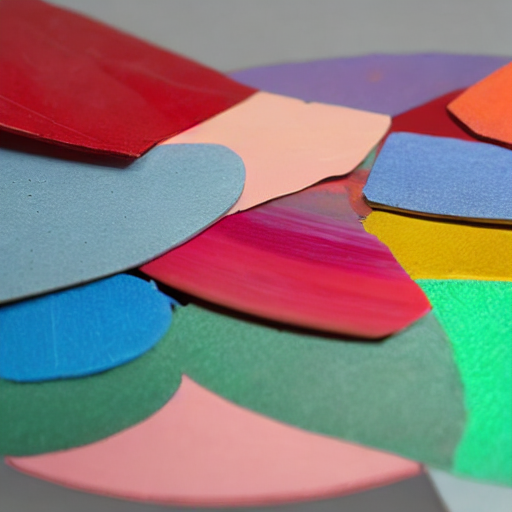

Comparação de Crops – Original × Reconstruído com Caption e Similaridade
Imagem Original
Crop Original
Caption
Reconstruído
Score CLIP

there is a man that is standing in the rain with a watch

0.4837